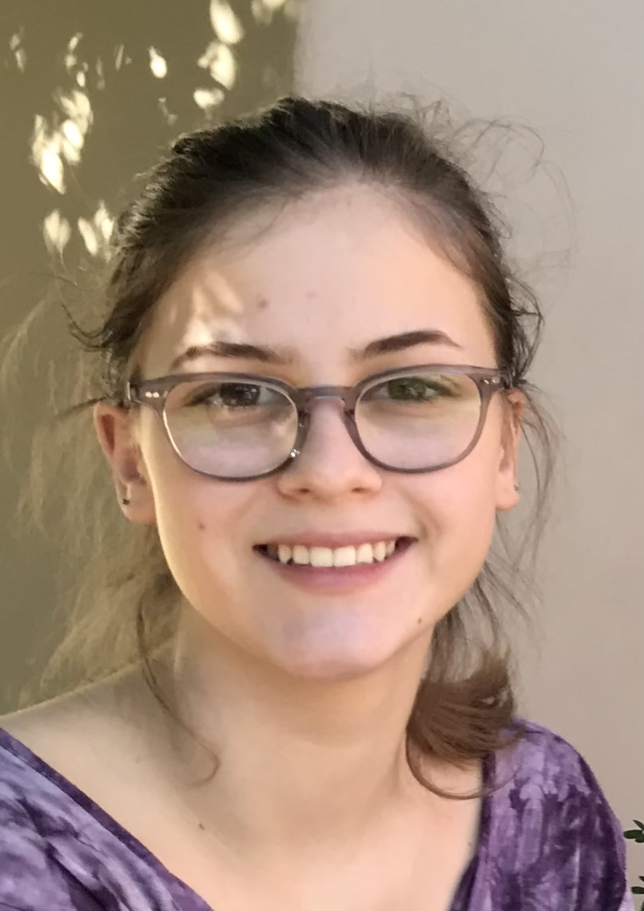

Lily Teodorovich

Summary
I am in the process of learning to code. I'm currently taking online Udemy courses to learn web development
and I plan on learning more coding languages as I advance. I hope to begin working as a Junior Web Developer
in the next year or so.
Education
Associates degree in pre-health sciences from ACC.
Work Experience
- Barista at Starbucks (Feb 2022-current)
- Memorized entire menu quickly, interacted positively with customers making them feel welcome
and quickly making their orders to specification.
Skills
- Fast, adaptive learner
- Works well with a team, and also solo. Prefers a mix of both.
- Good with customers/clients, always friendly and helpful
Hobbies
Contact me